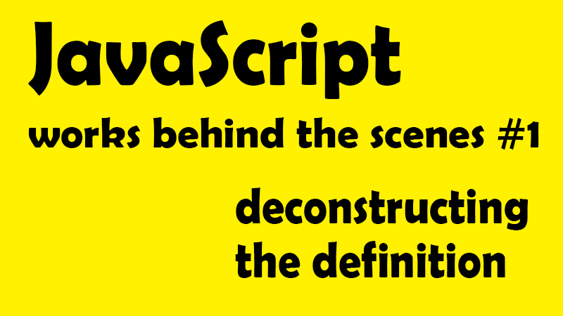

在結束 Alpha Camp 第二階段的課程後，也開始尋找其他線上的學習資源，而在眾多推薦下購買了 Jonas Schmedtmann 在 Udemy 上的課程-The Complete JavaScript Course 2021: From Zero to Expert! 想深入了解 JavaScript，接下來這一系列文章，將作為深入理解 JavaScript 運作原理的學習筆記，記下那些我未曾注意過的 JavaScript 細節。同時真的也要在開頭先大推 Jonas 的課，比喻相當好理解，也會同步示範各種不同的範例，真的非常划算！
📌 High-level 高階語言
首先，所有在電腦上執行的程式都需要記憶體或 CPU 這一類的硬體資源來讓他們得以運作，而像低階程式語言(例如：C 語言)需要手動管理存放資源，例如以 malloc() 跟 free() 等低階函式來控管記憶體權限，而高階語言(例如：JavaScript、Python)則因為抽象化(Abstraction)的特性，讓我們可以省去這些麻煩的指定步驟，也因為更接近人類的語言而更易於學習，但缺點就是程式效率永遠不如低階語言的快速。
抽象化的意義在 MDN 裡，有著這樣的解釋：
📌 Garbage-collected 回收機制
相較於低階語言必須手動管理記憶體，當 JavaScript 宣告變數時，就會自動分配空間並移除不再使用的物件以釋放儲存空間，而這就稱為回收機制（garbage-collected）。但這個自動化的回收流程，也往往會使開發人員產生不用理會「記憶體管理」的錯誤認知。
當我們談到程式語言，共有的記憶體生命週期認知，幾乎是一樣的。
- 配置你的程式所需的記憶體空間
- 使用配置到的記憶體空間(讀，寫)
- 當不再使用時，釋放已被配置的記憶體空間
而除去第二點是確定的外(執行)，第一、第三點，在手動管理存放資源的低階語言是確定的，但是在高階語言，例如：Javascript 則是相對較不明確的，其中最大的問題就在於 ─ 如何找到「已不再被使用的記憶體配置空間」
垃圾回收器(garbage collector)
在 Javascript 中，有一個垃圾回收器(garbage collector)，他的工作就是追蹤記憶體的分配情形，來盡量達到「釋放」不再使用的記憶體空間任務。
但由於自動判斷不再使用記憶體空間這件事其實本質上是「不可判定的」，因為你要如何去確認他不會再被使用呢？而面對這樣的問題，就衍生出 Reference-counting garbage collection 作為演算法機制，也就是把「這個物件再也不會被使用」的較廣定義限縮為「沒有其他物件需要再訪問這個物件」也就是「相對」而言不被需要的認定方式來作為判斷依據，以將他視為可回收記憶體的垃圾。MDN：Reference-counting garbage collection 範例
📌 Interpreted or just-in-time compiled
從抽象語言轉換為機器語言的方法，而 JavaScript 是一個直譯語言，或更應該說是 Just-in-time compilation 即時編譯語言。
📌 Multi-paradigm 多範式語言
和 C++語言一樣，JavaScript 語言是一個多範式語言，所謂**範式(paradigm)**是一種建構程式碼的方式和整體思維方式，取決於編碼的風格和技術。
其中 JavaScript 分別支援 Procedural programming(指令式程式設計)、Object-oriented programming (OOP)(物件導向程式設計)、Functional programming (FP)(函式程式設計)，除此之外，也可以總的分為 Imperative(命令式)或 Declarative(聲明式)。
而其實很多程式語言都只支援某一種類的程式設計(例如：OOP、PP、FP)，但對 Javascript 而言，卻是可以三種混合使用，可見 JavaScript 的靈活性與通用性。(所以讓我們可以想幹嘛就幹嘛 (大誤
📌 Prototype-based(基於原型) object-oriented (物件導向)
首先，幾乎除了原始值(primitive values)，例如：數字、字串以外，在 JavaScript 裡的所有元件都可以被視為一個物件(例如：陣列、物件、函式)，這也是為什麼他們可以被視為獨立元件，也可以互相被呼叫或使用。
而要介紹何謂基於原型 Prototype-based，我們可以以常見的陣列操作來比喻 例如陣列中的 push 方法，(為什麼用 push 就可以改變陣列?) 這是因為原型繼承（prototypal inheritance）
當我們創建一個陣列，我們是從一個叫做**陣列藍圖(array blueprint)**的模板基礎上創建陣列的，也就是所謂的原型（Prototype）(不然他怎麼可以隨隨便便生成陣列？對吧？)
而這樣的陣列藍圖，包含了所有陣列的方法，所以我們有了陣列後，可以輕鬆使用例如使用 array.push()、array.pull()等，去操作陣列，這是因為在使用陣列藍圖時，也就繼承（inherit）了藍圖上的操作方法(method)。但當然這只是簡單介紹，未來有機會會再深入這個議題去討論。
📌 First-class functions 一級函式
一級函式簡言之，也就是在該程式語言中，函式可以被視為「變數」被當作參數傳遞到另一個函式，或在另一個函式中被當作回傳值（return），或被當作值一般，被指定到一個變數當中，或也可以被放置在物件中。
而這樣的一級函式並不是只有 JavaScript 專屬的特性，但因為 JavaScript 有，所以 JavaScript hen 棒。而這也是多範式語言中的其中一項 Functional programming (FP)(函式程式設計)。
所謂函示可以被視為變數傳遞，讓我們看以下範例
範例：Modal
const closeModal = () => {
modal.classList.add("hidden");
overlay.classList.add("hidden");
};
overlay.addEventListener("click", closeModal);
- 註 1：不是 closeModal() ，因為這樣一來 closeModal 會馬上被執行，而不是等到觸發"click"事件才被執行
- 註 2：傳入 closeModal，就是函式被作為一個單純的參數被傳入其中！
📌 Dynamic 動態類型語言
在 JavaScript 中，我們不會去指定資料類型(例如數字、字串等)，而是當 JavaScript 引擎執行代碼時自動辨認該資料類型，於是當我們為變數重新賦值時，資料類型又可以自動且輕易地轉換，這就是動態類型(dynamically-typed)的意義。簡言之，就是允許動態轉換。
範例：
let x = 23;
let y = 19;
x = "Emily";
// x 從原本的 number，轉換為 string
而談到動態語言，相較於 JavaScript，其他需要手動定義類型的語言(例如：C、Java)則可以避免動態轉換所造成的各種錯誤，而這也是為什麼許多人說，JavaScript 應該強化類型的原因，因為很容易發生錯誤。而如果想要使用類型版的 JavaScript，可以學習 TypeScript
📌 Single-threaded 單執行序 Non-blocking event loop 非阻塞事件循環
首先我們需要先了解 JavaScript 是單執行序，也就是一次只能執行一件事情，但若遇上需要同時間處理多項事件該怎麼辦呢？這就需要併發模型（concurrency model）來處理安排多工的情形。
而要達到這樣的效果，就需要事件循環（event loop）的幫助，也就是先在後台執行任務，並當執行完畢後，再將他們重新放回主線程上，這就是 JavaScript 的單線程非阻塞事件循環併發模型。(JavaScript’s non-blocking event loop concurrency model with a single thread.)，說起來超饒口，只是先有一個基本印象，會在接下來逐一單元筆記整理。
這篇文章，只是做為整個 JavaScript 重點概觀的一個紀錄，接下來，將會依照課程的進行，依序記錄重點細節，如果你跟我依樣初學 JavaScript，真的很推薦在 Udemy 上購買 Jonas 的課 JavaScript zero to expert！雖然已經從初學 Javascript 到可以應用 node.js，但跟著每一小節學習，仍讓我看見之前從未注意到的細節，也學習了 Jonas 的編寫習慣，來讓自己成為更好的開發人員與學習者。
也歡迎跟著我對於 How javascript works behind the senes 筆記，一起逐步深入了解 Javascript 的原理喔！
JavaScript 深度旅遊系列
- JS#1：JavaScript 運作原理 ─ 深入研究之前，先了解全局
- JS#2：JavaScript 引擎與 JavaScript 的運行環境 ─ 什麼？JavaScript 早就不只是直譯式語言了？！
- JS#3：JavaScript 的執行原理，Javascript 的執行環境 (Execution context) 與執行堆疊 (Call Stack)
- JS#4：Javascript 的範疇/作用域（Scope）與範疇鏈 （Scope Chain）變數查找（variable lookup）
- JS#5：優先認可 變數提升 Hoisting？暫時死區(Temporal Dead Zone) ─ const、let、var 的小祕密